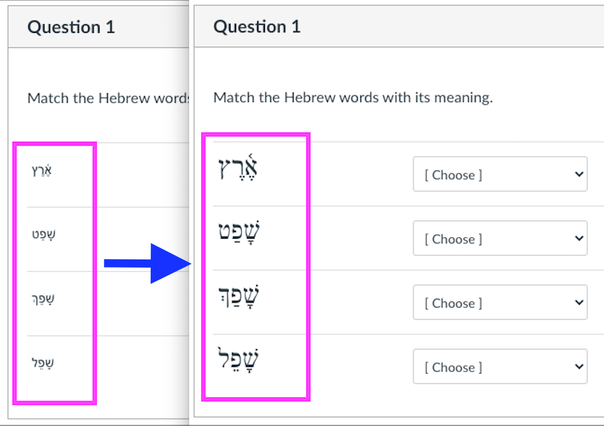

Change Hebrew Font in Matching Questions on Canvas (Tempermonkey Extension)
Before and After the Change:

- This tutorial shows how to use the Tempermonkey browser extension to change the Hebrew font in the Matching Questions as well as the paradigm input fields on Canvas.
- Canvas does not allow us to change fonts for the matching questions.
- Using this setup, it will automatically change the font when you open the quizzes/exams.
- You don't neeed to do anything after the installation.
- Two Steps to Install
- Install the Tempermonkey browser extension.
- Go to this page, click the corresponding tab to your browser, and then install the extension. (Microsoft Edge is a very good browser. Both Dr. Garrett and I recommend it.)
- Brave, Vivaldi, etc. are Chromium-based and should install from the Chrome store.
- Microsoft Edge has its own extension store. But you could also install it from the Chrome extension store.
- The Safari extension is priced at $1.99, all other browser extensions are free. Safari is not recommended for the course anyway.
- After installing the Tempermonkey extension to your browser, click this link and install the JavaScript.
-
❗ Note: The JavaScript works only when the current website link matches:
https://*.instructure.com/courses/*/quizzes/*, where * stands for any characters, or the typing test page as well as the paradigm practice pages on my website here.
If the website link does not match the pattern, the JavaScript will not be executed, and the script will not be visible in the tempermonkey extension. You will have to click "Dashboard" to see all installed JavaScripts.
- Done!
- If you are not taking Hebrew anymore, you can remove the user script from the Tempermonkey extension. Tempermonkey has some other very useful user scripts, such as removing adds, preventing tracking, etc. You may choose to keep it and download other userful user scripts. But if you don't need it, you may also remove the Tempermonkey extension from your browser.
- If you are a grader,
- click this link to install the grader version. The grader version also works for the speedgrader pages.
- You may also install this user script which auto expands the comment box as you type or paste texts into it.
- QuizWiz. A user script with various functions that could be customized. Click this link to install (including resizing the comment box).
- Note: When I use the QuizWiz script in Safari, it complains about RAM usage and the webpage slows down. When I use it in Microsoft Edge, CPU usage goes up at an unacceptable level. When I use it in Vivaldi, it works normally.
{kind=link}